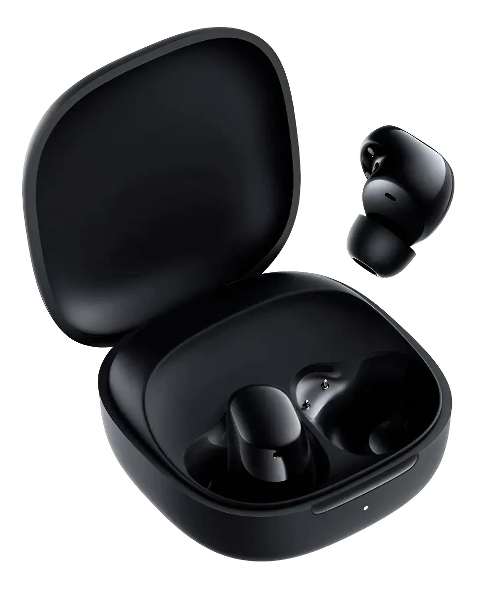
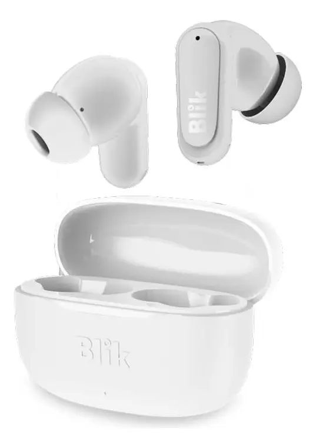

Comparativas
Xiaomi Redmi Buds 6 Play vs Blik Air500: El duelo de las 13 lucas
Publicado el 14 de Julio, 2026 por Eduardo Krebs
Buscando audífonos inalámbricos en Chile es fácil tentarse con opciones caras, pero ¿qué pasa cuando el presupuesto es sagrado y no queremos gastar más de quince mil pesos? Hoy ponemos frente a frente a dos gigantes del ahorro: los Xiaomi Redmi Buds 6 Play y los Blik Air500. Analizamos su sonido, comodidad y si realmente valen lo que cuestan.
Comparación Rápida
| Característica | Xiaomi Redmi Buds 6 Play | Blik Air500 |
|---|---|---|
| Precio Estimado | $11.990 CLP | $12.990 CLP |
| Autonomía | Hasta 36 horas (con estuche) | Hasta 24 horas (con estuche) |
| Cancelación de Ruido | No (Solo pasiva) | No (Solo pasiva) |
| ¿Para quién es? | Quienes buscan batería extrema y respaldo de marca | Quienes buscan un diseño compacto y marca local |
1. Xiaomi Redmi Buds 6 Play: El gigante del ahorro

Xiaomi se ha caracterizado por reventar el mercado de entrada y con los Redmi Buds 6 Play no es la excepción. Por apenas un poco más de diez lucas, te llevas un sonido bastante decente y una caja de carga muy compacta...
Lo Bueno
- Duración de batería sobresaliente
- Conexión estable con Bluetooth 5.3
Lo Malo
- El cable de carga es extremadamente corto
- Materiales plásticos muy sencillos
2. Blik Air500: La alternativa compacta

Blik, una marca que se ha ganado su espacio en el retail chileno, ofrece con el Air500 un diseño de bastón muy cómodo que recuerda a opciones de gama más alta, destacando por su portabilidad...
Lo Bueno
- Diseño ergonómico tipo bastón
- Estuche muy ligero de transportar
Lo Malo
- Menor autonomía de batería que el rival
- Bajos menos marcados
Veredicto: ¿Cuál deberías comprar?
Si priorizas la duración de la batería por sobre todas las cosas, los Xiaomi Redmi Buds 6 Play se llevan la corona de este versus. Sin embargo, si prefieres la comodidad de un formato de bastón y un estuche más plano para el bolsillo, los Blik Air500 no te van a decepcionar por el mismo precio.